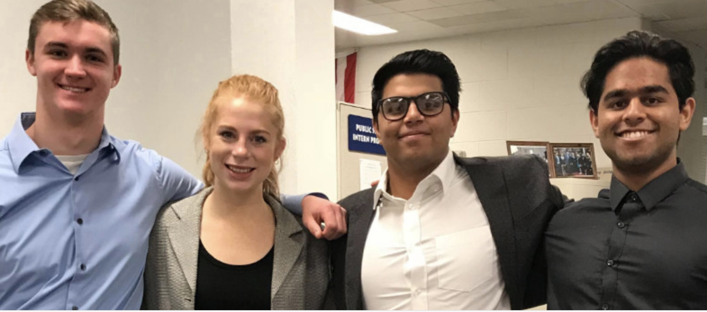

Percussionist “Tabla”, an Indian traditional classical percussion instrument, Talent show winner at India & USA, Stage performance at religious, cultural, charitable & social events since 2012.
“The Brown Show” 2019, Hill Auditorium, Michigan - Performer (Tabla), show attendance: 700, Logistics Chair
“BLOOM” : Lead instrumentalist along with four dancers of different Indian dance forms presented an Indian classical music and dance drama on “sexual assault awareness” at University of Michigan which was broadcasted live on YouTube, Arts Scholarship awarded for Daring Dances at University and winner of the outstanding cultural awareness program of 2019 at the University.
10+ performances as a concert percussionist at the University (2017-2019).
Hackathons/ Volunteering

Amazon Employer Challenge 2018, featured as top 10 teams.
Accenture Innovation Challenge 2018: represented University of Michigan and came 2nd in Midwest leg.
Accenture Innovation Challenge 2018: represented University of Michigan and came 2nd in Midwest leg.
CARE USA: CARE (Cooperative for Assistance and Relief Everywhere) represented Connecticut delegation and selected as Social Media coordinator.